Bạn bè giới thiệu sách (review) · Hộ chiếu thể loại
Thử thách lớp · Thống kê sáng kiến và xuất Excel
Phiếu dùng thử, kể cả phần thử quyền truy cập
Địa chỉ ứng dụng: https://nhat-ky-doc-sach.vercel.app
Tập 1 hướng dẫn danh mục sách và mượn – trả, tập 2 hướng dẫn đăng nhập bằng mã lớp + PIN và nhật ký đọc sách. Tập 3 giới thiệu 4 chức năng mới và một phiếu dùng thử để cô kiểm tra lại từng chức năng trước khi đưa cho học sinh dùng thật.
| Chức năng | Để làm gì | Ai dùng |
|---|---|---|
| Bạn bè giới thiệu sách | Em đọc xong viết vài câu giới thiệu; thư viện duyệt rồi mới hiện ở trang cuốn sách cho các bạn đọc. | Học sinh viết, thủ thư duyệt |
| Hộ chiếu thể loại | Mỗi chủ đề sách là một "con tem". Đọc xong một cuốn được đóng tem chủ đề đó → khuyến khích em đọc đa dạng. | Học sinh |
| Thử thách lớp | Cô đặt mục tiêu "mỗi em ghi nhật ký N ngày" trong một khoảng thời gian; em thấy tiến độ của mình và số bạn đã đạt. | Giáo viên chủ nhiệm (thủ thư cũng đặt được) |
| Thống kê sáng kiến | Số liệu mượn sách và nhật ký do máy chủ tự tính; bảng so sánh trước – sau; xuất Excel làm minh chứng. | Thủ thư, quản trị |
Cần chuẩn bị:
Hộ chiếu không cần nhập thêm gì: ứng dụng dùng chính chủ đề của sách đã có trong danh mục. Em bấm "Em đọc xong rồi" một cuốn → được đóng tem các chủ đề của cuốn đó (cuốn có 2 chủ đề thì được 2 tem). Tem do máy chủ tự tính từ những cuốn em đã đọc xong; đọc lại cuốn cùng chủ đề không được tem thêm.
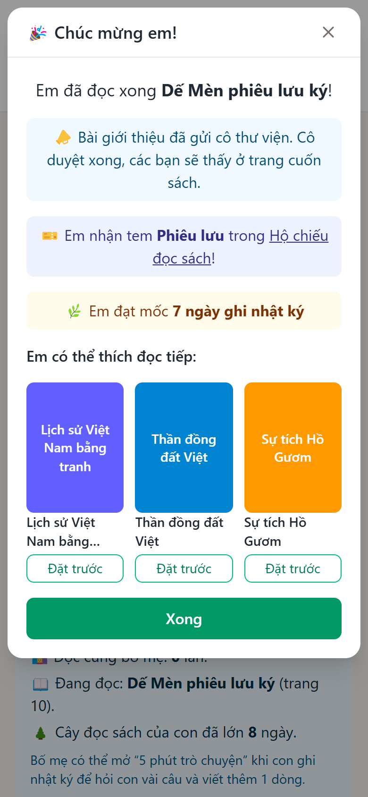
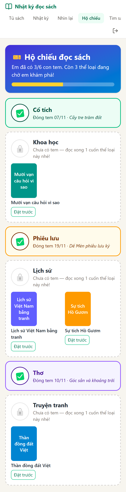
Trong hộp "Em đọc xong rồi" có thêm ô 📣 Giới thiệu sách cho bạn (không bắt buộc). Em cũng viết được ở trang cuốn sách, mục Các bạn nói gì, nếu đã đọc xong cuốn đó.
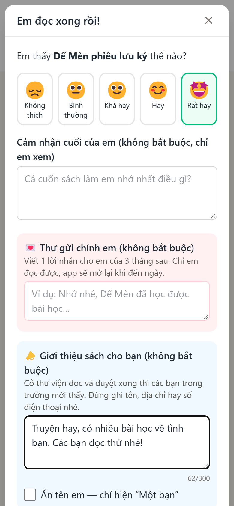
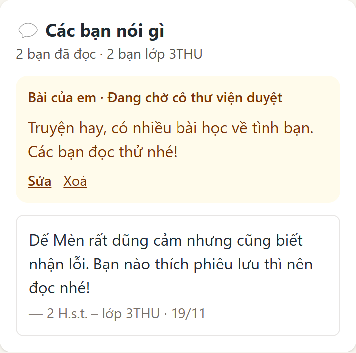
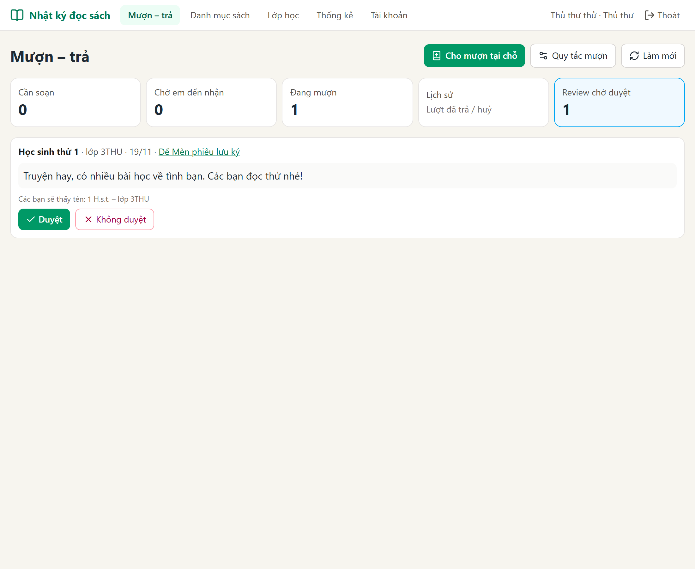
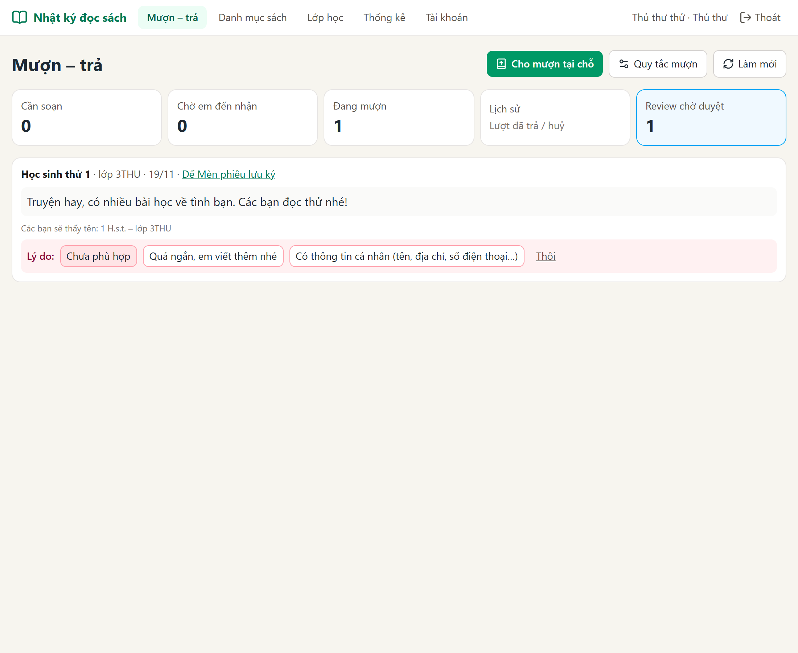
Mục 💬 Các bạn nói gì ở trang mỗi cuốn hiện số bạn đã đọc, số bạn cùng lớp đã đọc và tối đa 30 bài đã duyệt mới nhất. Bài chưa duyệt hoặc không được duyệt chỉ em viết thấy (Hình 7).
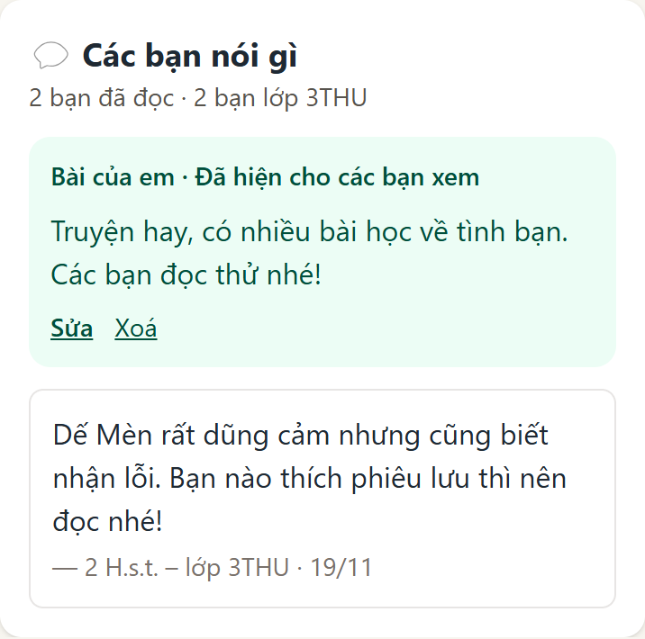
Giáo viên chủ nhiệm vào Lớp của tôi (thủ thư: Lớp học → chọn lớp) → khung 🏁 Thử thách lớp → + Đặt thử thách.
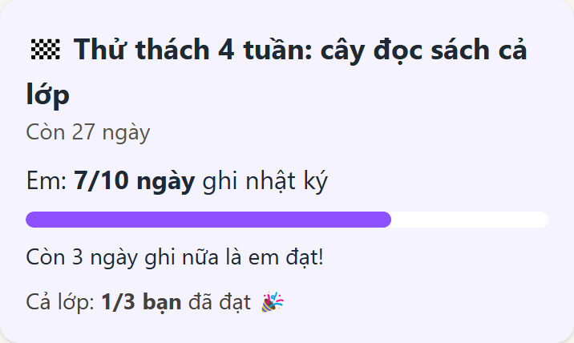
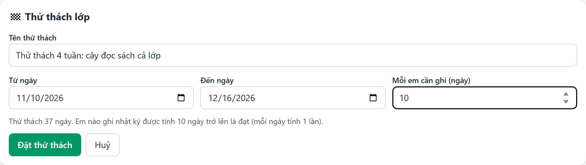
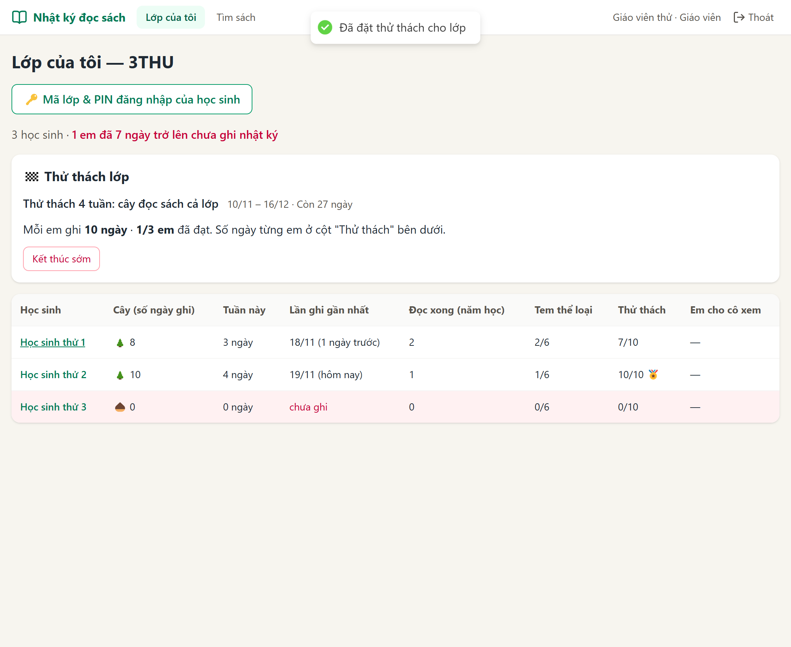
Menu Thống kê chỉ có ở tài khoản thủ thư và quản trị. Mọi con số do máy chủ tự tính từ dữ liệu mượn – trả và nhật ký; trang và tệp Excel không có tên học sinh, chỉ số theo lớp, khối và theo sách.
Vào Tài khoản → danh sách lớp ở đầu trang → bấm vào tên lớp thí điểm để gắn dấu ★ (bấm lần nữa để bỏ). Chưa gắn lớp nào thì phạm vi "Các lớp thí điểm" ra 0 học sinh và trang có dòng nhắc.
Chọn từ ngày – đến ngày (mặc định từ 1/9 năm học đến hôm nay, tối đa khoảng 13 tháng) và phạm vi: các lớp thí điểm, toàn trường hoặc một lớp → bấm Xem.
| Nhóm | Chỉ số |
|---|---|
| Mượn sách | Lượt mượn mỗi tháng (quy về 30 ngày để so với sổ mượn) · tỉ lệ học sinh có mượn ít nhất 1 lần · trả trễ / mất · sách "nằm im" (tính toàn trường) · lượt đặt qua app và lượt đến từ gợi ý của app · lượt mượn theo tháng, khối, lớp · 10 sách mượn nhiều nhất |
| Riêng của app | Số em có nhật ký, số lần ghi, số ngày cây lớn · số em đọc cùng bố mẹ · lượt đọc xong · review được duyệt · số em hoàn thành thử thách lớp · tem trung bình · chủ đề được yêu thích (căn cứ đề xuất mua sách) |
Học sinh được tính theo lớp hiện tại của em. "Lượt mượn" là lượt thủ thư đã giao sách (đang mượn, đã trả, mất), tính theo ngày giao.
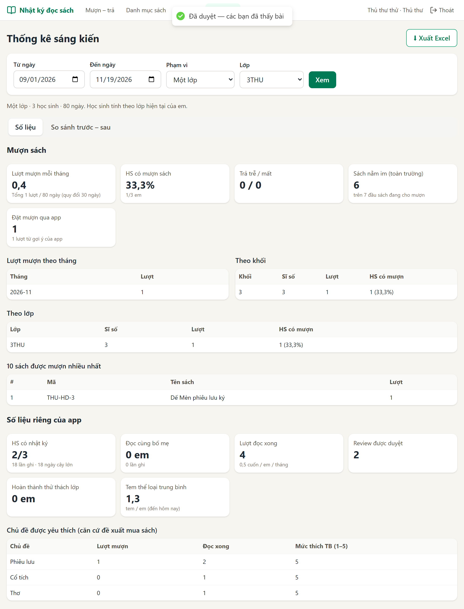
Tab So sánh trước – sau có đúng 8 chỉ số của bảng phần 3A trong tài liệu chuẩn bị sáng kiến. Bấm Nhập số ở từng dòng để nhập số Trước (gộp chung các lớp thí điểm) và ghi nguồn (ví dụ "Sổ mượn HK I 2025–2026").
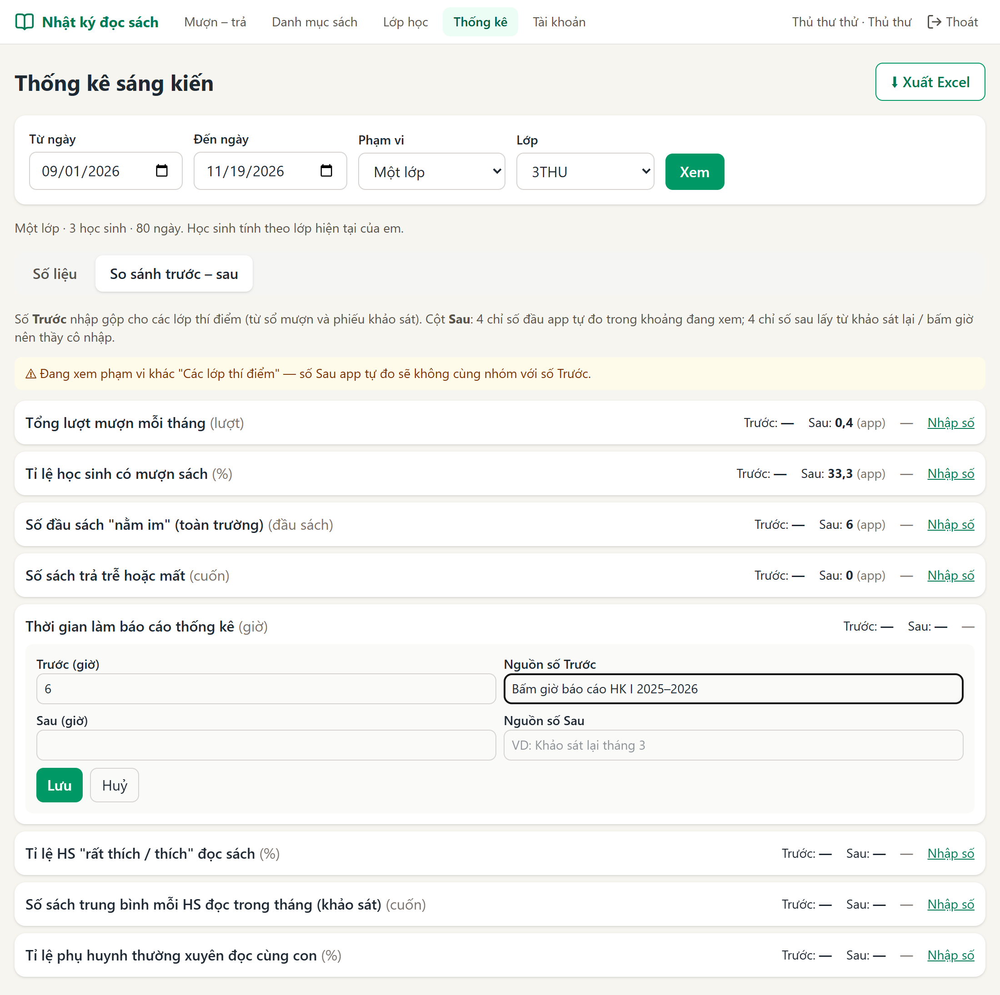
Bấm ⬇ Xuất Excel (góc trên bên phải). Tệp có 7 trang: So sánh trước – sau, Tổng quan, Mượn theo tháng, Theo lớp, Top 10 sách, Chủ đề yêu thích, Sách nằm im; tên tệp ghi khoảng ngày. Tệp không có tên học sinh nên dùng làm minh chứng được ngay. Nên chụp thêm màn hình trang Thống kê để đưa vào hồ sơ sáng kiến.
| Nội dung | Học sinh | GVCN lớp em | Thủ thư, quản trị |
|---|---|---|---|
| Hộ chiếu (tem, ngày, cuốn) | của em | chỉ số tem | chỉ số tem |
| Bài giới thiệu đã duyệt | mọi người đã đăng nhập (tên rút gọn hoặc ẩn tên) | ||
| Bài chờ duyệt / không duyệt | của em | — | ✓ (để duyệt) |
| Thử thách lớp | số của em + số bạn đạt | số ngày từng em | số ngày từng em |
| Trang Thống kê, tệp Excel | — | — | ✓ (không tên học sinh) |
Bảo mật đã kiểm tra (tháng 11/2026): mọi quyền trên đều do máy chủ kiểm, không phụ thuộc giao diện. Đã thử bằng tài khoản thật: người lạ, học sinh, giáo viên cố gọi thẳng máy chủ để xem thống kê, duyệt bài, đặt thử thách lớp khác, tự cộng tem — đều bị chặn. Danh sách tài khoản và mật khẩu không nằm trên mạng.
Dùng lớp thử 3THU: 1 máy tính (thủ thư hoặc giáo viên) và 1 điện thoại (học sinh thử). Đánh dấu ✓ ở cột "Được", hoặc ghi rõ ở cột "Ghi chú" nếu thấy khó dùng, báo sai hay chậm. Phần B là thử chặn quyền: kết quả đúng là không làm được.
A. Thử chức năng
| TT | Việc cần thử | Kết quả đúng | Được | Ghi chú |
|---|---|---|---|---|
| 1 | Danh mục: gắn chủ đề cho 6–8 cuốn (mỗi cuốn 1–2 chủ đề) | Lưu được | ||
| 2 | Điện thoại (HS thử): mở Hộ chiếu | Thấy đủ chủ đề, tem xám, có gợi ý 1–2 cuốn và nút Đặt trước | ||
| 3 | Thủ thư cho em mượn 1 cuốn có chủ đề; em ghi nhật ký 1 lần rồi bấm Em đọc xong rồi, viết giới thiệu ≥ 10 ký tự | Chúc mừng có dòng "Em nhận tem …" và "Bài giới thiệu đã gửi cô thư viện" | ||
| 4 | Mở lại Hộ chiếu | Tem chủ đề đó có màu, ghi ngày và tên cuốn | ||
| 5 | Mở trang cuốn đó, mục Các bạn nói gì | Bài của em "đang chờ cô duyệt" | ||
| 6 | Máy tính: Mượn – trả → Review chờ duyệt → Không duyệt, chọn "Quá ngắn, em viết thêm nhé" | Bài biến khỏi hàng chờ | ||
| 7 | Điện thoại: mở lại trang cuốn sách, sửa bài, gửi | Thấy lý do; sửa xong lại "đang chờ duyệt" | ||
| 8 | Máy tính: Duyệt bài | Trang sách hiện bài, tên rút gọn (hoặc "Một bạn lớp …" nếu em ẩn tên) | ||
| 9 | Đăng nhập HS thử thứ 2, mở trang cuốn đó | Thấy bài của bạn, không thấy bài chưa duyệt | ||
| 10 | GVCN (hoặc thủ thư → Lớp học → 3THU): đặt thử thách 2 tuần, mỗi em 3 ngày | Hiện khung thử thách và cột "Thử thách" | ||
| 11 | Điện thoại: mở trang chủ; ghi nhật ký 1 câu ngắn | Thẻ thử thách tăng 1 ngày; "Cả lớp: X/3 bạn đã đạt" | ||
| 12 | Thử đặt thêm 1 thử thách nữa khi đang có | Báo phải kết thúc thử thách đang có | ||
| 13 | Bấm Kết thúc sớm | Thử thách vào mục "Thử thách đã xong" | ||
| 14 | Tài khoản: gắn ★ cho lớp thí điểm | Tên lớp có ★ | ||
| 15 | Thống kê → phạm vi Một lớp → 3THU → Xem | Số lượt mượn, nhật ký, đọc xong khớp với việc vừa làm | ||
| 16 | So sánh trước – sau: nhập số Trước cho 2 chỉ số, Sau cho "Thời gian làm báo cáo" | Hiện chênh lệch và % | ||
| 17 | Bấm Xuất Excel, mở tệp | 7 trang, không có tên học sinh |
B. Thử chặn quyền (kết quả đúng là bị chặn / không thấy)
| TT | Việc cần thử | Kết quả đúng | Được | Ghi chú |
|---|---|---|---|---|
| 18 | Đăng nhập học sinh, gõ thẳng địa chỉ …/thu-vien/thong-ke | Không vào được (về trang của em) | ||
| 19 | Đăng nhập giáo viên, gõ thẳng …/thu-vien/thong-ke và …/thu-vien | Không vào được | ||
| 20 | Học sinh mở trang một cuốn em chưa đọc xong | Không có ô viết giới thiệu | ||
| 21 | Học sinh thử 2 xem trang chủ khi có thử thách | Chỉ thấy số của mình và "X/3 bạn đạt", không thấy tên bạn | ||
| 22 | Giáo viên xem Lớp của tôi | Chỉ lớp mình; cột tem / thử thách chỉ là con số |
Góp ý thêm (câu chữ có dễ hiểu với học sinh lớp 3 không? lý do không duyệt có đủ chưa? số liệu nào cần thêm cho sáng kiến?):
…………………………………………………………………………………………………………………………
…………………………………………………………………………………………………………………………
…………………………………………………………………………………………………………………………